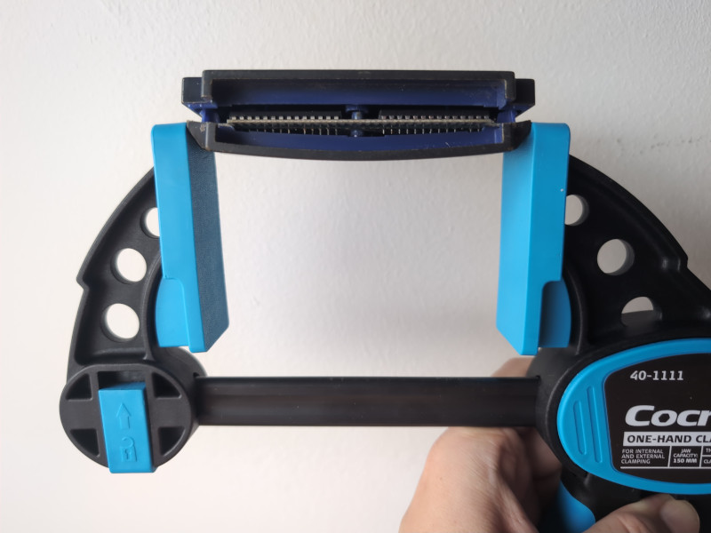
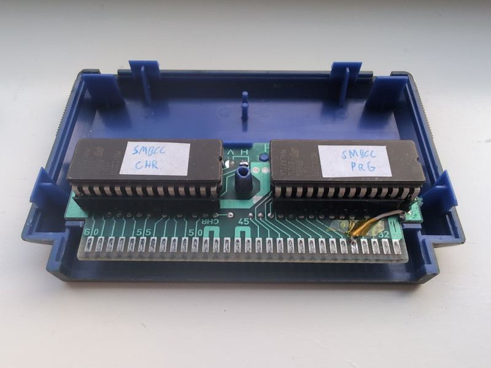
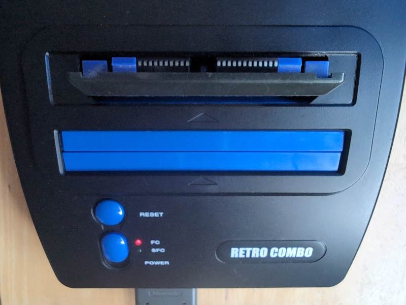
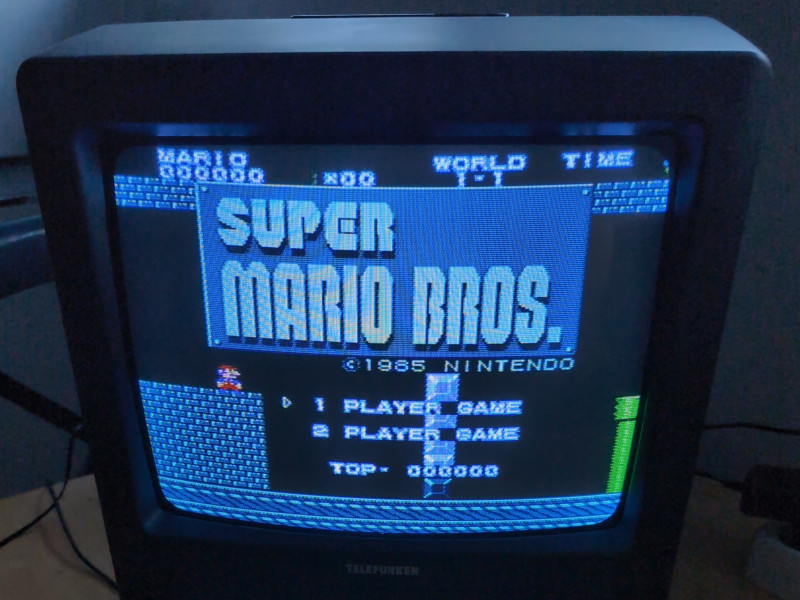

Famicom Cartridge ROM Hack
Just for fun I modified a Famicom cartridge to use custom EPROMs, in order to run a ROM hack the old fashioned way.
The sacrificial cartridge was an early version of "Baseball" which has the "HVC-NROM-02" PCB and uses older style dual in-line Package ROMs. I could then add sockets and use regular 27C256 UV EPROMs as replacements.
Opening up a Famicom cartridge is a challenge without breaking it. The best way seems to be to use quick grips and squeeze at a certain place that makes the internal plastic clips bend and pop open the cartridge:

I chose Super Mario Bros as the target game for the ROM hack. There is a lot of ROM hacks for SMB but finding one that does not change the underlying Mapper from mapper #0 reduced the selection. I ended up with "Super Mario Bros Cruise" which fits the criteria and changes both the program code (PRG ROM) and graphics (CHR ROM).
The following steps was used to extract the binary parts that can be programmed onto EPROMs, by skipping the iNES header. The 8K CHR ROM was also repeated 4 times to be mirrored across the whole 32K ROM:
dd if=smbcc.nes bs=16 skip=1 count=2048 of=smbcc.prg
dd if=smbcc.nes bs=16 skip=2049 count=512 of=smbcc.chr
cat smbcc.chr smbcc.chr smbcc.chr smbcc.chr > smbcc.chr4
Since the original "Baseball" game uses a 16K PRG ROM I needed to make an additional modification to allow a 32K PRG ROM by mapping up the missing address line 14. This meant isolating pin 27 on the PRG ROM from +5V and instead adding a bodge wire to pin 35 on the cartridge connector. The end result looks like this:

With sockets in addition to EPROMs the PCB is too thick for the back cartridge shell to fit back on, but it can still be inserted into a console:

Here is what the ROM hack looks like on a real CRT:
